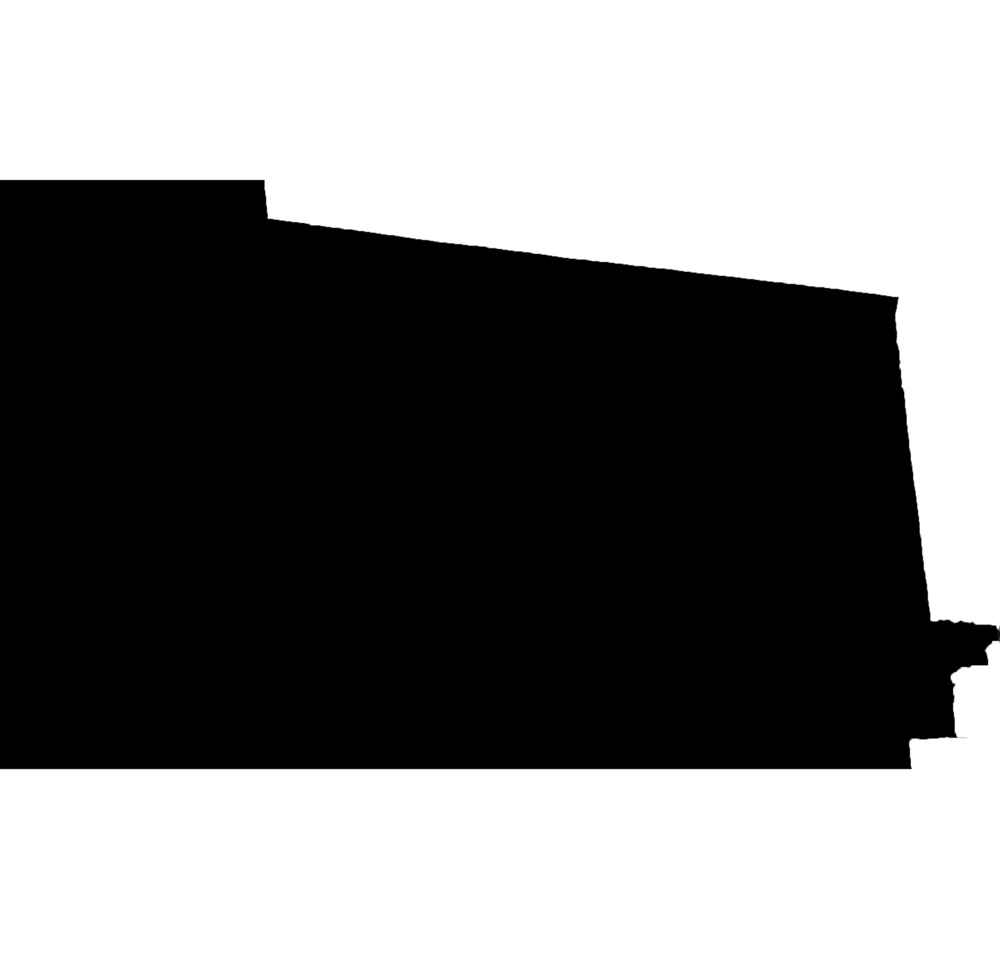
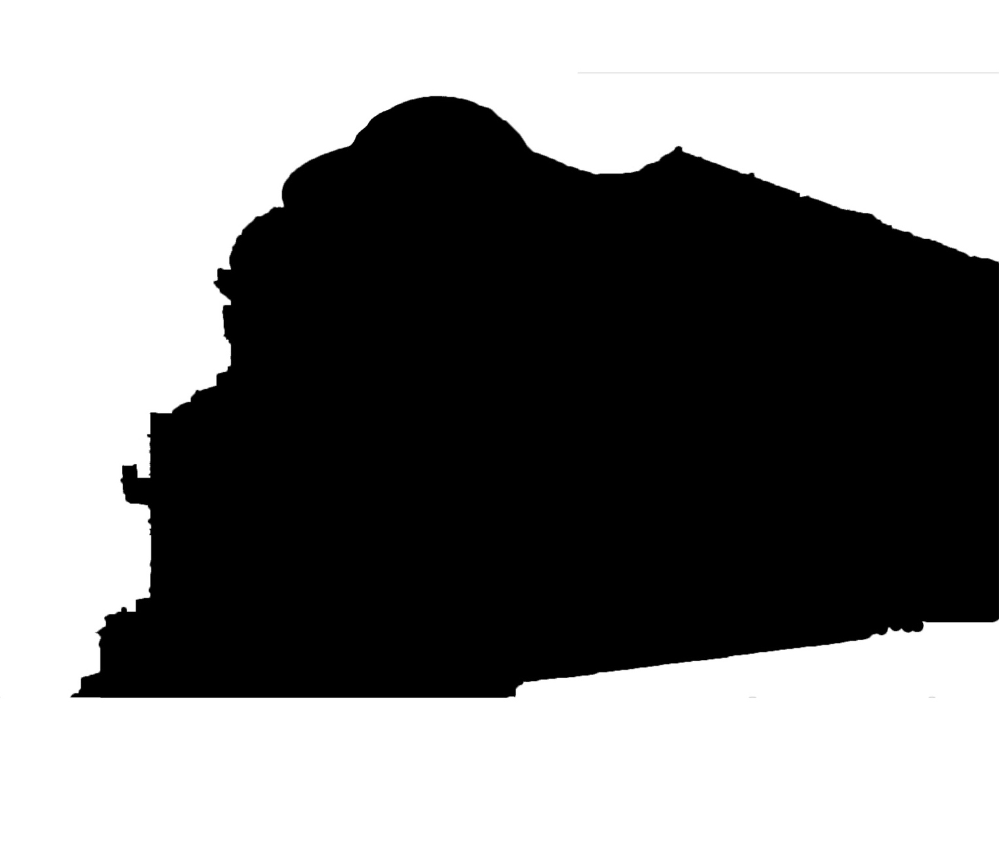
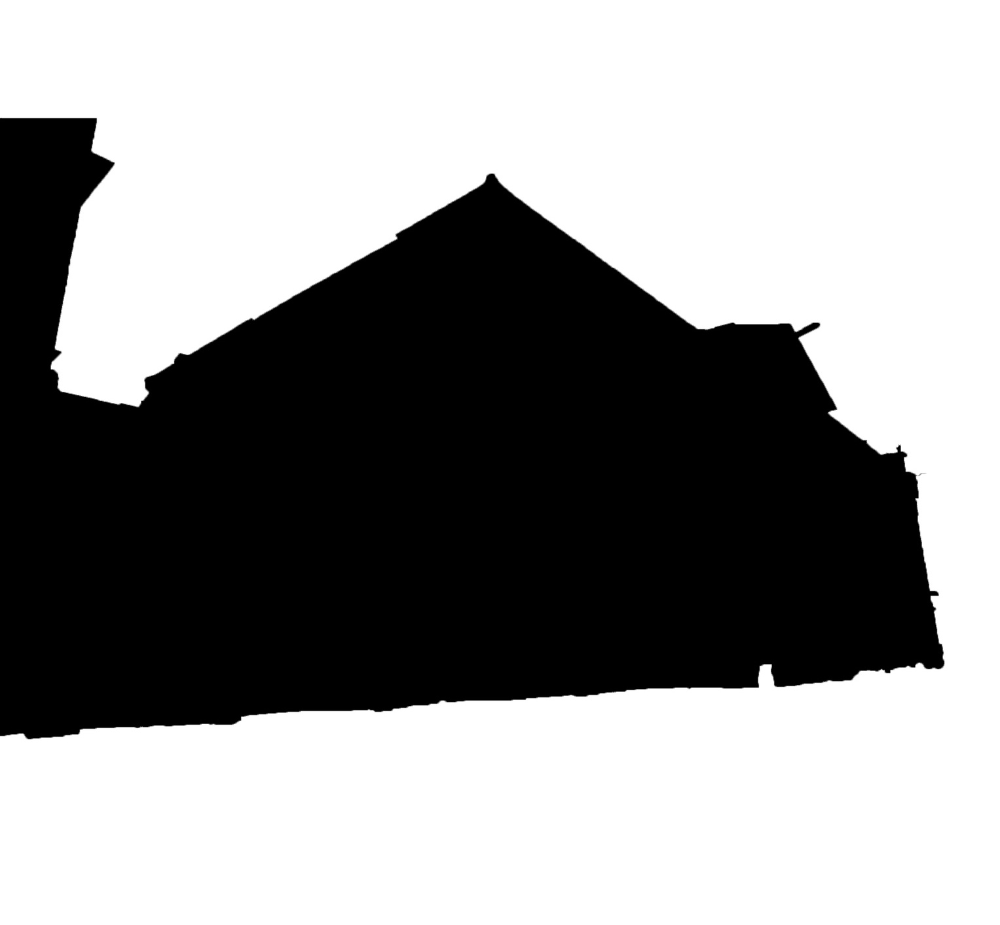
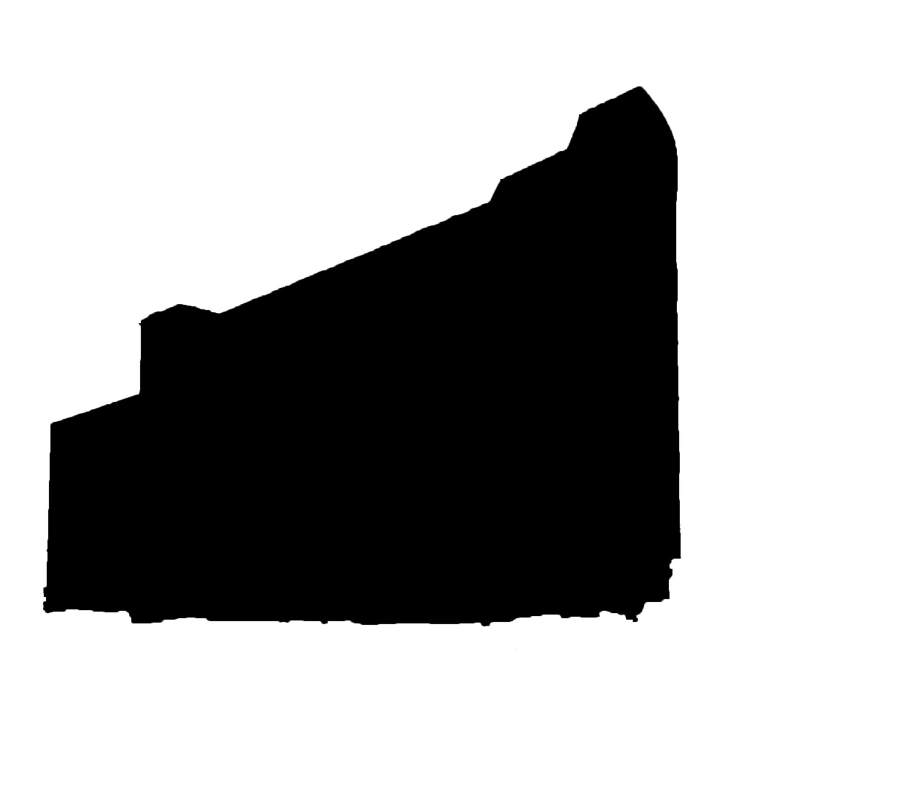
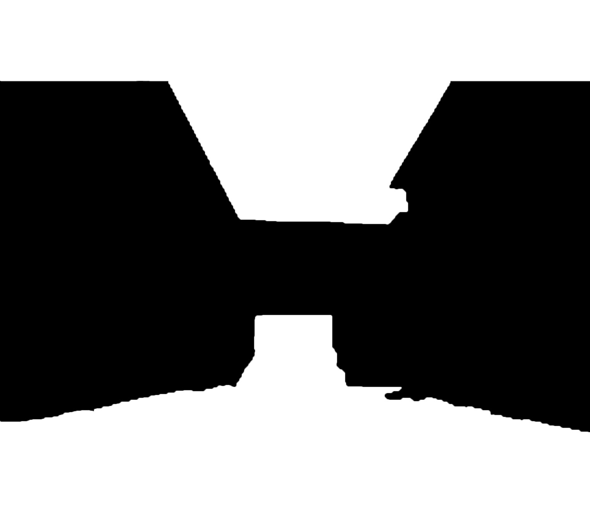

Внеучебка
Как ты уже знаешь из задания по БЖД, в Вышке очень разнообразная внеучебная жизнь — можешь петь в Хоре, писать исследования для Научных Боёв, а можешь помогать бездомным животным.
Наше следующее задание поможет разобраться, какая из огромного списка студенческих организаций подойдет именно тебе!
Твои текущие баллы:
-
Все абитуриенты делают важный выбор перед поступлением. Почему ты выбрал Вышку?
-
Какой тип личности подходит тебе?
-
Ты комфортно чувствуешь себя на сцене?
-
Какие у тебя отношения со спортом?
-
Вы с друзьями решили провести фестиваль. Чем займешься?
-
Нравится заниматься наукой?
-
У тебя пришло уведомление от группы ВКонтакте. Что это за группа?
Ожидания
У каждого первокурсника есть свои ожидания от Вышки — кто-то ждет разнообразную внеучебку, кто-то хочет посвятить себя науке, кто-то просто хочет найти новых друзей и получить диплом.
А чего ждешь ты?
Твои текущие баллы:
Здания Вышки
Учеба в Вышке — это одно большое приключение. И не только потому что тебе встретится много всего на пути! Придется попутешествовать по Москве и изучить все корпуса, начнем же сейчас!
Открывай картинки, нажимая на треугольники и угадывай, силуэт какого корпуса представлен. Чтобы проверить ответ, нажми на Enter.
Твои текущие баллы:
-

-

-

-

-

ЛМС и другие проклятия
Дедлайн, сессия, зачетка... Столько новых слов нужно выучить первокурснику, а ещё же есть аббревиатуры, которые запомнить ещё сложнее.
Давай проверим, упадет ли у тебя ЛМС, словишь ли ты ИУП и пройдешь ли СОП!
Твои текущие баллы:
-
СОП — это...
-
БЖД — это...
-
LMS — это...
-
ИУП — это...
-
ПУД — это...
Общежитие: starter pack
University life goals — приехать к одногруппникам в Дубки! А если уже живешь в общаге, то разобраться, как выжить в этом невероятном месте.
Выбери «самое важное» и уложись в 10 000, чтобы не брать в долг у соседей на тусовки!
Твои текущие баллы:
- Колонка 1500
- Блестки 400
- Диско-шар 2000
- Фотоаппарат 3000
- Настольная игра 500
- Наушники 700
Развлечения
- Кружка 500
- Беруши 100
- Чайник 1000
- Кастрюля 700
Удобство
- Тетради 200
- Ручки 200
- Power bank 1000
- Ноутбук 4000
Учеба
IELTS
Всё лето просидел в TikTok? А как тебе классические «вышкинские» песни в английском варианте?
Открывай тексты песен по клику на треугольники и оцени свои шансы сдать IELTS в конце второго курса!
Твои текущие баллы:
-
On the first day of spring
At the end of the earth
Accidentally we met you
White snow was falling
And the roses did not bloom
But spring love came to us
She was desperately beautiful
-
I'm so used to living by you alone, by you alone
See the dawn and hear you wake up not with me
It became so easy for me to breathe through the open window
And tell her just one thing
-
Got fat, scattered across the country,
Your body was stretched across Moscow
Peter on horseback flutters your lips,
Even the Louvre did not stand aside.
-
Warm air, fast river
For three days we are with you without sleep
Trust me on my words: "we will live forever"
Take me weak, I promise to lose
Days, weeks, no turning back
We flew and lost along the way
Blood, let's drink to love, take care of yourself
I don't know if we'll ever meet again
-
There was a report card, but became single
I almost died young
I'm just wasting my prime on you, you, you, you
I'm just wasting my time on you, you, you, you
Time to shoot, shooting between us
Pa-pa-you get into the heart, you stay there, love
Курируйтесь
Кураторы уже провели адаптационные программы, но всё ли ты запомнил? Давай проверим тебя на знание Вышки!
Твои текущие баллы:
Как зовут нашего ректора?
Какие проценты скидки можно получить на платном обучении?
Какой у Вышки символ?
Можно ли не проходить СОП?
Красная кнопка анонимная?
Перевестись на бюджет с коммерческой основы можно?
Какой главный корпус НИУ ВШЭ?
Где есть кампусы Вышки?
В Вышке празднуют день студента?
У Вышки есть своя школа?
3,49
«Немного не дотянул» — и такое слышат вышкинцы перед экзаменами, получая страшный накоп «3,49». Разберемся и с другими вышкинскими цифрами, но помни — попыток всего три!
Твои текущие баллы:
-
Сколько учебных корпусов в Вышке?
-
Сколько зданий Вышки существует?
-
Размер ГАС?
-
Cредняя стоимость общежития?
-
Cколько в среднем стоит комплексный обед?
-
Сколько в среднем нужно стоять за пропуском на Шабле (в часах)?
-
Сколько общежитий в Вышке?
Генератор отмазок от дедлайна
«Кошка домашку съела», «у нас трубу прорвало» и «вот справка от мамы» остаются в школьной жизни. Скорее генерируй свою идеальную отмазку от дедлайна!
Твои текущие баллы:
Пропустил дедлайн? Не беда! У нас есть несколько универсальных отмазок, проверенных временем.
Нажми "Сгенерировать" и получи свое уникальное решение проблемы!
Поздравляем! Ты дошел до конца квеста "Путь первака". Нажми на кнопку "Завершить", чтобы увидеть результат.